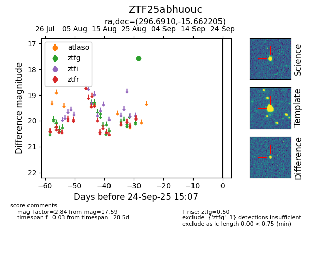

FINK: ZTF25abhuouc
Lasair: ZTF25abhuouc
ALeRCE: ZTF25abhuouc
ZTF25abhuouc (ztf,fink)
equatorial (ra, dec) = (296.6910,-15.66220)
galactic (l, b) = (24.6974,-19.14540)

last ztfg=17.59
1 ztfg detections